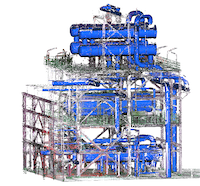
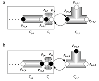

苏智勇
博士，副教授，硕士研究生导师
地址: 江苏省南京市孝陵卫200号南京理工大学自动化学院7015室
邮箱: suzhiyong@njust.edu.cn
电话: (+86)1-3-9-0-5-1-6-1-2-7-1
|
苏智勇博士，副教授，硕士研究生导师地址: 江苏省南京市孝陵卫200号南京理工大学自动化学院7015室 邮箱: suzhiyong@njust.edu.cn 电话: (+86)1-3-9-0-5-1-6-1-2-7-1 |
[个人简介] [研究方向] [科研项目] [主要论文] [学术兼职] [教学] [指导学生] [English Version]
现任南京理工大学自动化学院副教授，硕士研究生导师。2009年6月毕业于中国科学院计算技术研究所计算机应用专业，获工学博士学位，导师唐卫清研究员。2006年6月毕业于南京理工大学计算机科学与工程学院计算机应用专业，获得工学硕士学位，导师吴慧中教授，李蔚清副教授。2004年6月毕业于南京理工大学计算机科学与工程学院计算机科学与技术专业，获得学士学位。
研究领域涉及计算机图形学、增强现实、计算机视觉、机器学习，目前主要研究内容包括：
[主要论文][^Top][Complete list] |
 |
Weakly Supervised Real-world Point Cloud ClassificationAn Deng, Peng Zhang, Zhuheng Lu, Weiqing Li, and Zhiyong Su* Under Review. [PDF] [Code] |
|  | Slicing-Tracking-Detection: Simultaneous Multi-Cylinder Detection from Large-scale and Complex Point CloudsZhuheng Lu, Weiwei Mao,Yuewei Dai, Weiqing Li, and Zhiyong Su* Under Review. [PDF] [Code] |
 |
Learning to Hash for Personalized Image AuthenticationZhiyong Su, Liang Yao, Jialin Mei, Lang Zhou, and Weiqing Li* IEEE Transactions on Circuits and Systems for Video Technology, to appear, 2020. [PDF] [Code] |
 |
Robust 2D Engineering CAD Graphics Hashing for Joint Topology and Geometry Authentication via Covariance-Based DescriptorsZhiyong Su*, Ying Ye, Qi Zhang, Weiqing Li, Yuewei Dai IEEE Transactions on Information Forensics and Security, 13(4): 1018-1030, 2018. [PDF] |
 |
Topology Authentication for Piping Isometric Drawings Zhiyong Su*, Xin Yang, Guangjie Liu, Weiqing Li, Weiqing Tang Computer-Aided Design, 66(9): 33-44, 2015. [PDF] |
|  | Watermarking 3D CAPD models for topology verification Zhiyong Su*, Weiqing Li, Jianshou Kong, Yuewei Dai, Weiqing Tang Computer-Aided Design, 45(7): 1042-1052, 2013. [PDF] |
CCF高级会员、IEEE会员、ACM会员
IEEE Transactions on Information Forensics and Security, IEEE Transactions on Multimedia, IEEE Access, Computer-Aided Design, Journal of Information Security and Applications, etc.
网络系统的信息处理技术
软件技术基础
电力系统通信技术
2014-: 陆竹恒 (与戴跃伟教授共同指导)
2011-: 茅伟伟 (与戴跃伟教授共同指导)
2020-: 张鹏，吕思聪，褚超，吉子悦，黄迪雷(联合指导)
2019-: 余田甜，周诗洋，孙国星，仇栋，李勇(联合指导)
2018-: 邓安，伍一鹤，何丽君，蒋素琴，杨罡，李惠芳(联合指导)
2017-2020: 李奇, 王汉, 姚亮, 梅嘉琳, 刘琳琳
2016-2019: 李维浩, 袁浛天, 姚世明, 张景蓉
2015-2018: 薛佳盛, 张琪, 叶颖
2014-2017: 陈龚, 马晓斌, 王鑫
2013-2016: 郭亚飞, 沈校生, 陆颖
2012-2015: 姚怡超 (与茅耀斌教授共同指导), 邢成欢(与茅耀斌教授共同指导)
2011-2014: 杨洋
2009-2012: 许开, 张琪

Copyright © 2020, Zhiyong Su, Last modified: 30.12.2020